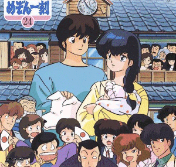

Maison Ikkoku

From the Anime Pocket Guide:
Cast:
Yusaku Godai ............................. Issei Futamata
Kyoko Otonashi ........................... Sumi Shimamoto
Hanae Ichinose .............................. Kazuyo Aoki
Kentaro Ichinose ......................... Chika Sakamoto
Yotsuya ................................... Shigeru Chiba
Akemi Roppongi ................................ Yuko Mita
Yagami Ibuki ........................... Yuriko Fuchizaki
Sayoko Kuroki ............................. Saeko Shimazu
Asuna Kujo ................................. Hiromi Tsuru
Shun Mitaka ................................ Akira Kamiya
Kozue Nanao .............................. Miina Tominaga
Yousuke Nanao ........................ Megumi Hayashibara
Cha Cha Maru Master ...................... Norio Wakamoto
Sakamoto ................................ Toshio Furukawa
kindergarden kid .............................. Kae Araki
Yuko ..................................... Masako Katsuki
Kasumi ..................................... Kazue Komiya
Etsuko ..................................... Sanae Miyuki
Ikuko ....................................... Mayumi Shoh
Kanzaka ................................ Yoshino Takamori
Kozue's father ............................. Rokurou Naya
Asuna's mother ........................... Gara Takashima
{unknown character} ..................... Akiko Hiramatsu
{unknown character} ................. Tomomichi Nishimura
Sayuko Kuroki (MI movie) ............. Yoshiko Sakakibara
hostess A ................................. Satoko Kifuji
Yukari Godai .............................. Hisako Kyouda
Asami ............................................ TARAKO
Mrs. Chigusa .......................... Minori Matsushima
Mr. Chigusa ................................ Kosei Tomita
Description:
Godai is a ronin (i.e. someone who's failed university entrance
exams) living in room #5 of a run down apartment house called
Maison Ikkoku. Among the other residents are the nosy Ichinose
(room #1), the sexy Akemi Roppongi (#6), and the mysterious
Yotsuya (#4). The others are given to having wild parties which
makes it difficult for Godai to study. Into this mayhem comes
the recently widowed Kyoko as the new live-in manager. Godai
falls for her, but doesn't have the nerve to tell her. The show
follows their developing relationship amid the crazy goings on
at Maison Ikkoku. A romantic comedy by Rumiko Takahashi.
Other Resources
Anime Video Game Resource Center © 1998 by Luis A. Cruz